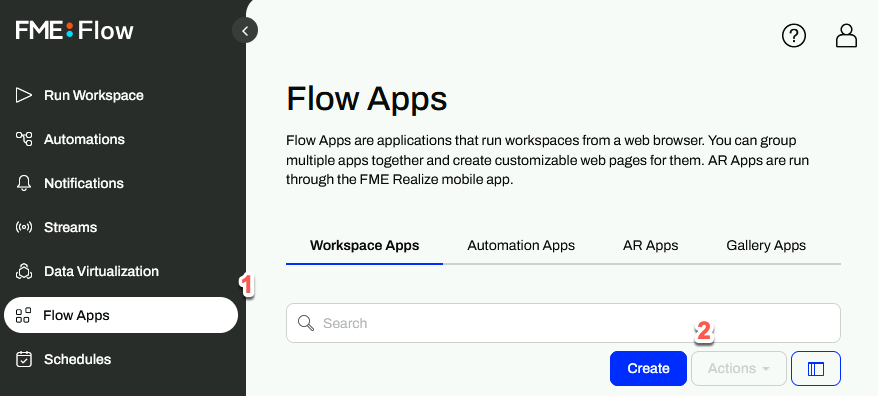
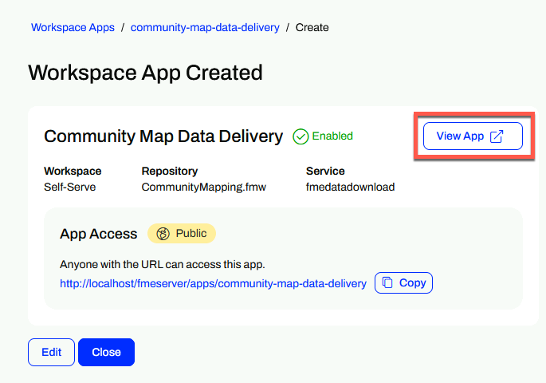
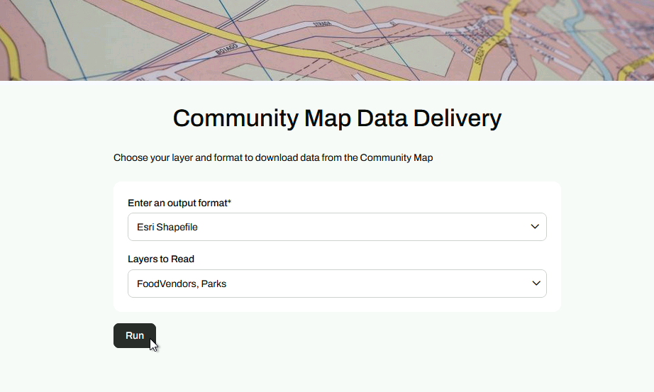

Learning Objectives
After completing this lesson, you’ll be able to:
- Explain how Workspace apps let you share FME Flow workflows with external users.
- Turn a workspace into a workspace app.
- Use a workspace app.
Instructions
In this lesson, you will:
- Scroll down to read the text below.
- Complete the exercise by following the steps.
- Complete the Quiz toward the bottom of the page.
- Optional: Let us know if you found this lesson relevant to your role by filling out the survey at the bottom of the page.
- Click 'Next' to mark the lesson complete.
Resources
- Starting workspace (should already be published to FME Flow as per the previous lesson’s instructions)
- C:\FMEData\Workspaces\IntegrateDataWithTheFMEPlatform\publish-a-self-serve-workspace-to-the-web-complete.fmw
- CommunityMap.gdb.zip
- C:\FMEData\Data\CommunityMapping\CommunityMap.gdb
- Images for app
- map-background.jpg
- C:\FMEData\Resources\IntegrateDataWithTheFMEPlatform\map-background.jpg
- icon.png
- C:\FMEData\Resources\IntegrateDataWithTheFMEPlatform\icon.png
Turn Workspaces into Apps

The word about self-serve data access spreads around Fatima, Frank, and Jennifer’s municipality. Frank is attracting more and more users to his self-serve workflows. However, not every municipality member—and certainly not the public—has FME Flow logins. As the FME Flow administrator, Frank faces the overhead of managing growing user accounts or finding a way to provide users access to FME Flow without creating accounts.
Thankfully, he knows he can use Flow Apps. Apps let you create custom web pages to provide a self-serve portal, allowing users to upload data to be transformed by your workflow or download data created as its output. An FME Flow login is not required to access an FME Flow app, and users can now pass parameter values via query strings or JSON on app load. Sharing data and increasing accessibility is easy with FME Flow apps.
There are three kinds of Flow apps:
- Workspace Apps run workspaces from a web browser. You can share workspace apps as web pages and customize their appearance.
- Gallery Apps are groupings of workspace apps and other links that are accessed from single, customizable web pages and shared as URLs.
- Automation Apps run Automations originating from a Manual Trigger. Automation apps are shared with authorized FME Flow users as URLs and may be presented through customizable web pages.

View an example FME Flow workspace app for self-serve data distribution.
Create a Self-Serve App
Frank wants to convert his self-serve workspace into a Flow workspace app.
In this exercise, you will:
- Create a workspace app in FME Flow using the published community mapping workspace.
- Customize the app's appearance with a heading logo and icon.
- Test the app by running it in a browser and downloading results.
1) Open FME Flow Workspace Apps
- Log in to your FME Flow instance (2026.1 or later).
- Click Flow Apps > Create.

2) Configure the Workspace App
| Field |
Value |
| Name |
community-map-data-delivery |
| Title |
Community Map Data Delivery |
| Description |
Choose your layer and format to download data from the Community Map |
| Repository |
Self-Serve |
| Workspace |
CommunityMapping.fmw |
| Service |
Data Download |
| App Security |
Public |
| Parameter Defaults |
Use Default - Off. Show in App - On. |
| Customize > Browser Icon |
icon.png (C:\FMEData\Resources\IntegrateDataWithTheFMEPlatform\icon.png) |
| Customize > Heading Logo |
map-background.jpg (C:\FMEData\Resources\IntegrateDataWithTheFMEPlatform\map-background.jpg) |
3) Test and Share the App
- Copy the URL from the confirmation page and open in a new browser tab, or...
- Click View App to open the app in a new browser tab.

- Fill in the parameters however you like, and run the workspace.

Tips & Tricks
- This example is just a tiny slice of what FME Flow can do. Combining Automations, Apps, Streams, and more means you can create complex and tailored integrations for your organization. Because most modern web platforms provide webhooks or API endpoints, you can connect to almost anything using FME Flow. Learn More
- The FME Flow App you just created is only accessible on the local machine. To make it available to anyone, go to System Configuration > Services, click on Change All Hosts, and replace http://localhost with http://<Public IP address> or http://<Public DNS>.
Leave Us Feedback on This Lesson